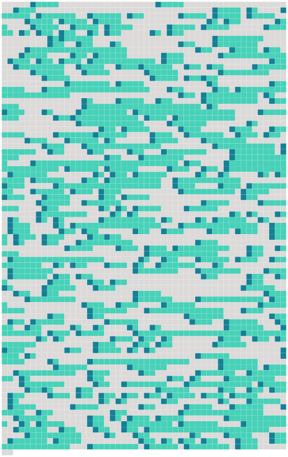

Longueur nb maillons : 391 mentions |
 |
Ils se trouvent principalement en [3 Afrique centrale et australe] [1 phrases] Bien que [4 la phylogénie des équidés] soit peu connue, ce groupe est manifestement paraphylétique, c'est-à-dire que si tous ces animaux descendent bien d' [5 une espèce commune] , toutes les espèces descendantes de celle -ci ne sont pas que des zèbres.
Il y a aussi des chevaux et des ânes qui sont plus ou moins proches de [2 chacune de ces espèces]
[6 Description] Les zèbres communs mesurent de [11 1, 10 mètre] à [12 1, 40 mètre] ( [13 1, 25 mètre] en moyenne ) au garrot contre [15 1, 30 mètre] à [16 1, 60 mètre] ( [17 1, 45 mètre] en moyenne ) au garrot pour les zèbres de Grévy, et vivent en moyenne [14 25] à [18 30 ans] dans la nature et jusqu'à [19 40 ans] dans un zoo. [20 La longueur du corps] va de [21 2, 20 mètres] à [22 2, 70 mètres] pour les zèbres communs et de [23 2, 50 mètres] à [24 3, 00 mètres] pour les zèbres de Grévy et [25 la longueur de la queue] de [26 40] à [27 75 cm] [28 La masse] varie de [29 175] à [30 300 kg] pour les zèbres communs contre [31 300] à [32 400 kg] pour les zèbres de Grévy. [1 phrases]
On compte en [33 2016] [34 moins de 800 000 zèbres] au total. [1 phrases] Grâce à [35 des méthodes de 36 reconnaissance de 37 formes] , les scientifiques peuvent désormais lire les rayures caractéristiques des zèbres comme [39 des codes-barres] pour recenser [40 une population] à partir de [41 photographies] Après avoir pris la photo d'un individu, [44 les chercheurs] la transfèrent sur [42 un ordinateur équipé de 45 logiciels dédiés] comme StripeSpotter, un logiciel mis au point par [52 47 l'université de 48 l'Illinois à 49 Chicago et 50 l'université de 51 Princeton] Ils zooment ensuite sur le flanc de l'animal, où [38 chaque rayure] est décomposée en [43 lignes verticales de pixels] [53 Leurs combinaisons] sont aussi uniques que [54 les empreintes digitales humaines] Reste à faire [55 une recherche] sur [56 la base de 57 données] pour voir si le zèbre est [58 un nouveau venu] StripeSpotter a été utilisé sur [60 46 des zèbres de Grévy et 59 des zèbres des plaines]
[61 D'autres travaux] étendent [62 la reconnaissance] à [63 d'autres animaux] comme [67 64 les léopards, 65 les girafes et 66 les Pterois] [68 Une légende africaine] demande si le zèbre est blanc à rayures noires ou noir à rayures blanches.
[69 Cette question] a généré [72 70 de nombreuses légendes ou 71 réponses fantaisistes] , mais [73 des explications plus scientifiques] existent.
[74 Formation des rayures]
[77 Les spécialistes] pensent généralement, en observant [78 les rayures partielles du Quagga] et en tenant compte de [79 la pigmentation nécessaire aux animaux] pour survivre sous [81 le soleil d'Afrique] , que les zèbres étaient originellement [80 des animaux pigmentés de noir] et que les raies se forment par [83 inhibition de 84 la production de 85 mélanine] Les raies noires et blanches du zèbre sont absentes [82 au stade fœtal initial] , ils sont entièrement noirs. Les rayures finissent par apparaître par bandes d' [86 environ quatre cents micromètres] ( [87 vingt fois] [88 une cellule] ). [2 phrases]
Selon [89 J. B. L. Bard] , [90 les espèces de zèbres] différeraient selon le stade embryonnaire auquel apparaissent les raies. En [91 1952] , Alan Turing a démontré que « même si [92 la concentration initiale en 93 morphogène] est uniforme, [94 la combinaison de 95 réactions chimiques et de 96 diffusion 97 des substances à travers 98 les tissus] peut faire apparaître [otif un motif] » et aussi que « [otif ce motif] dépend [99 du type de 100 réactions impliquées, de 101 la forme de 102 la région et 103 des concentrations initiales] ».
Ainsi l'évolution vers des rayures au lieu de taches n'est pas difficile et dépendra de [104 la taille] et [105 du temps de 107 gestation de 108 l'espèce] [109 Ceci] conforte la théorie du Dr Debra Kay Bennett selon laquelle les espèces de zèbres sont, [110 chacune] , plus proche d' [111 une espèce de cheval] que de [112 ses consœurs] car « il suffit d’ [113 une petite modification 114 des relations temporelles des processus] qui sous-tendent [115 la formation otif du motif] » pour faire apparaître des rayures au lieu de taches.
[106 Ce qui a donc pu se produire indépendamment au cours de l'évolution 116 des différentes espèces devenues des zèbres]
[117 Rôle]
[121 Les principales hypothèses sur la fonction des zébrures] concerneraient [124 le camouflage, 118 l'évasion face aux prédateurs, la thermorégulation et 123 les interactions sociales] ; toutefois, selon [125 une étude multifactorielle publiée en 126 2013] , rien ne vient étayer de [127 manière convaincante] [130 128 l'une ou 129 l'autre de 131 ces hypothèses] [132 Au 19e siècle] , [133 l'écrivain Rudyard Kipling et le naturaliste Alfred Russel Wallace] ont contribué à diffuser l'hypothèse selon laquelle les rayures du zèbre lui permettaient de mieux se fondre dans la savane. [134 Cette hypothèse longtemps considérée comme crédible dans 135 la communauté scientifique] a toutefois été démentie [136 au début 137 du 21e siècle] L'hypothèse est formellement démentie en [138 2016]
En fait, dans la savane, le zèbre est très visible, et il tendrait donc à se dresser comme [139 une exception] à [140 la règle du camouflage] Les rayures auraient aussi [141 un effet stroboscopique] sur les prédateurs. Lorsque [142 tout un troupeau] s'enfuit, [143 les raies 144 des divers individus] se mélangent, rendant flou [145 le contour d'146 un animal] [147 aux yeux d'un lion] , par exemple.
[149 Un phénomène comparable] serait à [150 l'origine 151 du camouflage Dazzle] Dans [152 les années 1970] , [153 des recherches] ont pointé le fait que [154 la mouche tsé-tsé] , responsable de [aladieSommeil la maladie 156 du sommeil] à [aladieSommeil laquelle] les zèbres sont plus sensibles que [155 d'autres animaux sauvages] , est attirée par [157 la vue de 158 larges zones monochromes] : les rayures permettraient ainsi de se protéger du parasite. Il est à [160 ce sujet significatif] de constater que [164 161 les zones de 162 répartition des zèbres et de 163 ces glossines] coïncident exactement et que les rayures s'estompent chez [165 les populations moins exposées au parasitisme par 167 les trypanosomes]
[159 Des travaux publiés en 166 2012] viennent corroborer [168 cette hypothèse] , en démontrant que [169 les taons] sont plus attirés par [170 les monochromes] , et que [171 l'effet « répulsif » des rayures] est plus prononcé pour [172 des rayures semblables à celles des zèbres] [173 Une autre hypothèse] veut que les rayures contribueraient à la thermorégulation, permettant aux zèbres qui broutent pendant [122 des heures] de mieux supporter [174 les fortes chaleurs de la savane africaine] Les bandes noires et blanches, par [177 175 absorption et 176 réflexion différentielle 178 des rayons solaires] , chauffent différemment, [179 ce qui provoquerait entre elles 180 un flux d'air différentiel à 181 l'origine de 182 tourbillons engendrant 183 un effet de 184 refroidissement]
[185 Ce dispositif] leur permet d'avoir [186 une température corporelle inférieure à 187 celle d'188 herbivores de 189 taille similaire paissant dans 190 les mêmes conditions] ( [191 29, 2 ° C] contre [192 32, 5 ° C] ). Les rayures favoriseraient [193 la cohésion sociale] en facilitant [194 la reconnaissance] et [195 l’ identification de 196 chaque individu d'197 un groupe] grâce [198 au dessin de 199 rayures unique]
Ainsi le zèbre de Burchell possède de [200 vingt-cinq] à [201 trente raies] sur [202 chacun de 203 ses flancs] , le zèbre de Grévy [204 en] compte environ [205 quatre-vingt] et le zèbre des montagnes [206 quarante-trois]
[209 207 Comportement et 208 écologie] Un zèbre en [224 bonne condition physique] a [225 plusieurs moyens de défense contre 226 ses prédateurs] , il possède [223 une très bonne vue diurne] , [227 une ouïe excellente] , [228 un bon odorat] et court très vite. Les zèbres peuvent ainsi tenir [229 une vitesse de 30 à 40 km / h] sur [230 une très longue distance] ou, en [231 cas de danger] , galoper à [232 60 km / h] en moyenne et même faire [233 des pointes] à [234 80 km / h] pour semer par exemple une lionne qui court presque aussi vite, mais ne tiendra pas [235 la distance] Pour se défendre, ils peuvent aussi mordre et d' [236 un coup de 237 sabot] , briser [238 la mâchoire d'239 une lionne] Leurs ruades peuvent être mortelles, celles -ci sont encore plus puissantes que [240 celles d'un cheval]
Leurs rayures provoquent aussi [241 une sorte d'« 242 effet stroboscopique] », et rendent [243 les individus] difficiles à repérer lorsqu'ils courent en [244 groupe]
[245 Systématique] [1 phrases]
[246 Espèces habituellement citées dans 249 les classifications classiques] : • Equus burchellii [250 Gray] , [251 1824] ou Zèbre de Burchell ( zèbre des plaines, synonyme du suivant ) • Equus quagga [256 Boddaert] , [255 1785] • Equus grevyi [254 Oustalet] , [257 1882] • Equus zebra [258 Linnaeus] , [259 1758]
[264 Une nouvelle classification] a été proposée en [266 2004] par [267 les Anglais 270 C. P. Groves et 271 H. B. Bell] , d'après [272 l'observation traditionnelle 273 du pelage et 274 des crânes de ces animaux] : • [275 Sous-genre Dolichohippus] avec [276 une seule espèce] : • Equus grevyi • [277 Sous-genre Hippotigris] avec [278 trois espèces] : • Equus quagga, avec [279 six sous-espèces] : • [280 Equus quagga quagga] ( éteint ) • [281 Equus quagga burchellii] • [282 Equus quagga boehmi] , • [283 Equus quagga borensis] • [284 Equus quagga chapmani] • [285 Equus quagga crawshayi] • Equus zebra • [287 Equus hartmannae] [1 phrases] Selon [252 les dernières recherches] ( [253 2004] ) il comporterait [288 six sous-espèces] , réparties entre [290 289 l'Afrique de l'Est et du Sud] Le « zèbre de Burchell vrai » désignerait en fait [291 une sous-espèce éteinte] ( Equus quagga burchelli ) ou n'ayant jamais existé ; • • Le zèbre des montagnes ( Equus zebra ), de [292 l'Afrique du Sud-Ouest] , tend à avoir [293 une toison lisse] , [294 un ventre blanc] et [295 des rayures plus rapprochées que son cousin des plaines] Il comprend [296 deux sous-espèces] , en [297 danger d'298 extinction] ; • • Le zèbre de Grévy ( Equus grevyi ) est le plus grand de tous les zèbres. Il possède [299 300 une longue crinière hérissée ainsi qu'une tête longue et étroite] qui le fait ressembler à [ule une mule] C'est un habitant [301 des savanes d'302 Éthiopie, de 303 Somalie et 304 du nord 305 du Kenya] Il est également menacé d' [306 extinction]
• [ammifere Il] serait à [309 l'origine de tous les équidés] ( cheval, [318 poney] , âne, zèbre ). Les zèbres sont, probablement, [316 les plus anciens représentants du genre Equus] [1 phrases] Le zèbre faisait également [317 partie de la famille 320 des périssodactyles] , tels que [323 321 les rhinocéros ou 322 les tapirs] Cette famille regroupe [319 tous les animaux] comportant [324 un nombre impair de 325 doigts]
[326 Au Miocène] , [327 les graminées] étant plus riches et plus abondantes, les équidés primitifs en profitèrent pour se multiplier et se développer : [328 leurs jambes] s'allongèrent pour mieux échapper [329 aux prédateurs] , et [330 leurs pieds] ne comptèrent, désormais, plus qu' [331 un seul doigt] , recouvert d' [332 un ongle] , [333 le sabot] [1 phrases] Grâce à [335 leur développement] , ils gagnèrent en [336 vitesse] , se déplacèrent davantage à [337 la recherche de 338 nourriture] et entreprirent de [339 plus longues migrations]
C'est à ce moment -là qu'ils se répandirent en Asie, en Afrique et en Europe, passant par [334 le détroit de 340 Béring] , alors recouvert de [341 glace épaisse]
De [342 nos jours] , il est presque impossible de distinguer le crâne d'un zèbre de [343 celui d'un cheval] , mais nous pouvons penser que les équidés qui colonisèrent les savanes tropicales devinrent des zèbres, laissant [344 les déserts arides] aux ânes sauvages et [346 les zones tempérées de 347 l'hémisphère Nord] aux chevaux sauvages. Des fossiles datant du Pléistocène démontrent [345 la grande répartition de ces équidés] Au Pléistocène, [352 348 Equus sivalenis ( 349 Chine ) et 350 Equus sellardsi] ( [351 Amérique du Nord] ) ressemblaient au quagga, ce zèbre d'Afrique qui s'est éteint [353 au XIXe siècle] À [354 la même époque] , celui qui occupait [355 le Sud de l'Afrique] est Equus pilicatus, ancêtre direct du zèbre de Grévy.
[356 L'évolution de 357 nombreuses espèces d'équidés] est mal connue, mais on sait qu'il existait encore [360 des ânes sauvages et des zèbres] en Europe à [358 la fin de 359 la dernière période glaciaire de 361 l’ ère quaternaire] Aujourd'hui, [362 les équidés sauvages] sont devenus rares.
Il existe sept principales espèces équines, dont [363 la plupart] sont très proches de [364 l'extinction] : les trois zèbres d'Afrique et leurs cousins, l'âne sauvage ; [365 le cheval sauvage de 366 Mongolie] ; les deux ânes sauvages d'Asie, [368 le kiang] et [369 l'hémione]
[371 367 Étymologie et 370 dénominations]
En français, « zèbre » est attesté [382 au début 383 du XVIIe siècle] : d'après [384 le Trésor de la langue française informatisé] , [385 sa première occurrence] ( [386 graphie : ‹ zebre] › ) se trouve dans [387 l’ Histoire des choses plus mémorables advenues tant ez Indes orientales, que autres païs de la descouverte] [388 des Portugais de 389 Pierre de Jarric] ( en ), parue à [390 Bordeaux] en [391 1610] Le portugais zebra servait initialement à désigner [374 un équidé sauvage] , [392 le zevro] ou [393 zebro] , particulièrement abondant dans la péninsule Ibérique jusqu' [395 au XVIe siècle] En [396 juin 2015] , [397 la nature biologique précise de l'animal] reste incertaine.
Quatre hypothèses ont été avancées selon lesquelles [398 le zebro ibérique] serait : soit [399 l'hydrontin] ( [400 Equus hydruntinus] ), un onagre éteint ; soit [401 l'ancêtre 402 du Sorraia] , une race chevaline portugaise ; soit [403 un onagre moderne] , introduit dans la péninsule Ibérique par [405 les musulmans] ; soit [394 un équidé domestique errant] , [404 âne] ou [406 cheval] [1 phrases]
On rencontre aussi [407 le terme zébresse] ou [408 zebrette] [1 phrases]
[409 Les zèbres et l'homme] Vivant dans [413 un milieu comprenant de 415 grands prédateurs tels que le lion, le guépard et la hyène] , le zèbre a développé [416 de puissantes techniques de 417 défense] D'après l'universitaire Carol Hall, « le fait qu’ il soit [421 un « aliment pour lion] » l’ a peut-être rendu moins attrayant [418 aux yeux 419 des premiers humains] ». Les tentatives de domestication s'expliquent par [410 sa résistance 411 au climat chaud] , [420 aux maladies africaines] et de [422 sa rapidité supérieure à 423 celle 424 du cheval rustique]
En [425 Afrique du Sud] , les Boers ont essayé [426 plusieurs fois] de harnacher des zèbres mais ont vu [427 la plupart de 428 leurs tentatives] déjouées par [429 la nature sauvage et têtue de l’ animal]
[430 Hybrides]
Le zébrule est le croisement d'un zèbre et d' [431 une jument]
[432 Reconstitutions]
Il s'agit d' [436 un élevage sélectif du Zèbre des plaines] ( Equus Quagga ) dans [437 le but] de retrouver [438 l'apparence de 439 l'animal disparu] après avoir découvert [440 la grande similitude de 441 l'ADN 442 des spécimens disparus] avec [443 celui des zèbres modernes]
Les zèbres dans [444 la culture]
Dans [450 plusieurs langues] ( comme [451 l'espagnol] , [452 l'anglais] ou [453 le néerlandais] ), on appelle [454 le passage piéton] respectivement [455 le passage-zèbre] , [456 le croisement-zèbre] et [457 le sentier-zèbre]
[458 Idiotismes animaliers] : [459 un drôle de zèbre] est [461 un individu douteux] et [462 filer comme un zèbre] veut dire courir très vite.
[463 Proverbes] Le zèbre est aussi [476 un symbole 477 du métissage et de 479 l'harmonie entre 480 les races]
Ainsi, le zèbre est [481 le symbole animal du Botswana] : ses rayures noires et blanches ornent [483 le drapeau] depuis [484 1996] et [485 deux zèbres affrontés] encadrent [486 les armoiries du pays]
Le Zèbre de Grévy est aussi [482 le symbole de l'Afrique et de 488 la faune africaine]
En [487 Angola] , [489 des crinières de zèbres] sont portées lors de [490 danses rituelles] ayant lieu pour [491 les cérémonies d'492 initiation 493 des jeunes] lors [494 des rites de « 495 transformation] ».
Zèbres dans [497 445 l'art et 496 la fiction] • • Drôles de zèbres est [508 un film de 507 Guy Lux de 509 1977] où un patron d' [510 hôtel] savant fou à [511 ses heures] veut transformer un cheval de course en [513 crack] en lui injectant notamment [512 du sang de zèbre] • • [514 Le Zèbre] est [515 un roman d'516 Alexandre Jardin] , [517 prix Femina 518 1988] • • Zig Zag, l'étalon zébré est [520 un film] pour [521 enfants] dont [519 le héros] est [522 un zèbre] • • [523 Marty le zèbre] , personnage [524 des films d'animation 525 Madagascar, 526 Madagascar 2 et 527 Madagascar 3] • • [530 528 Le film et 529 le manga Zebraman] racontent [531 l'histoire d'un super-héros] dont [535 532 le costume et 533 les pouvoirs] ( [534 une « super-ruade] » ) sont inspirés du zèbre. |
 |
Il est possible de télécharger la ressource sur la page Ortolang |
Si vous avez des questions ou vous voyez des erreurs, merci d'envoyer un mail à silvia.federzoni89@gmail.com |